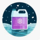

Imp:Ethylen glycol
Diet:Npo
Act:RBR
Cond:not good
Please
Iv line fixed
CVS
COM&POM
Cbc,Bun,Cr,Na,K,Alt,Ast,Alk_p,LDH,Cpk,Bs U/A,Ca,P,ABG&VBG,
CXR
Ser N/S 1 lit iv stay
O2 with 4_6lit/min
Amp Fomepizole 15mg/kg stat in 30 min &10mg/kg q12h
Ethanol20%1cc/kg stat&0/16 cc/kg/h
pyridoxine 500 mg Im daily
Thiamin 100 mg daily
نکات
1:مسمومیت بااتیلن گلیکول یا همان ضدیخ به علت طعم شیرین آن درکودکان بیشتر دیده میشود
2:آنتی دوت انتخابی فومپیزول است درصورت
دردسترس نبودن از اتانول استفاده میکنیم
✳️تهوع و استفراغ
✳️دردپهلوها
✳️تشنج
✳️هیپوکلسمی
✳️ادم ریه
✳️نارسایی قلب
✳️هماچوری
1️⃣ مسمومیت با اتانول یا متانول
DKA 2️⃣
salicylate intoxication 3️⃣
تصویری برای این نسخه موجود نیست.